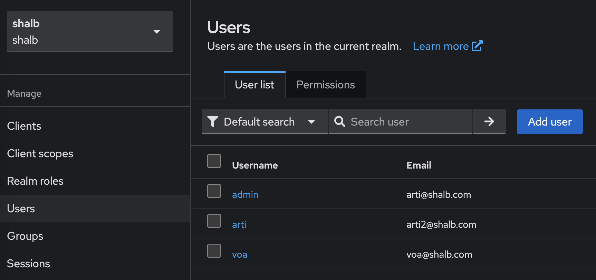
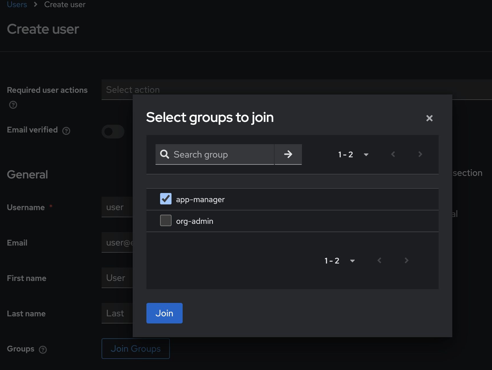

User and Group Management ¶
This guide explains how to set up and manage users, groups, and roles in Kube-DC using Kubernetes RBAC and Keycloak integration.
Overview ¶
Kube-DC implements a multi-tenant access control system that combines:
- Kubernetes RBAC: Handles resource-level permissions within namespaces
- Organization Groups: Manages project-level access across namespaces
- Keycloak Integration: Provides user authentication and group management
Prerequisites ¶
This guide assumes you're working from an Organization Admin perspective. You'll need:
- Access to the Kube-DC cluster with organization admin privileges
kubectlconfigured to access your cluster with organization admin privileges- Access to the Keycloak organization admin console
Before You Begin
During organization and project creation you will get a namespace with organization name <orgname> created and project namespace with <orgname>-<projectname> pattern.
Step-by-Step Guide ¶
Creating Project Roles ¶
Create a Kubernetes Role to define permissions within a project namespace. These roles dictate what actions users can perform on specific resources.
apiVersion: rbac.k8s.io/v1
kind: Role
metadata:
namespace: shalb-demo # Replace with your project namespace
name: resource-manager
rules:
- apiGroups: [""] # "" indicates the core API group
resources: ["pods", "services"]
verbs: ["get", "list", "create", "watch", "delete"]
- apiGroups: ["apps"]
resources: ["deployments", "daemonsets", "replicasets"]
verbs: ["get", "list", "create", "watch", "delete"]
Apply the role to your namespace using:
Role Scope
Remember that Roles are namespace-scoped. If you need permissions across multiple namespaces, you need to create a separate Role in each Project namespace.
Creating Organization Groups ¶
Create an OrganizationGroup Custom Resource (CR) to define group permissions across projects.
Key Points
- The OrganizationGroup CR automatically creates a corresponding group in Keycloak
- This CR must be created in the organization namespace, not the project namespace
- Role bindings would be created by this CR
apiVersion: kube-dc.com/v1
kind: OrganizationGroup
metadata:
name: "app-manager"
namespace: shalb # namespace of the organization (not the project)
spec:
permissions:
- project: "demo"
roles:
- resource-manager
# Additional projects and roles can be added:
# - project: "prod"
# roles:
# - resource-manager
Apply the group configuration:
Managing Users in Keycloak ¶
Access Keycloak Admin Console ¶
Retrieve Keycloak access credentials from your organization namespace:
kubectl get secret realm-access -n shalb -o jsonpath='{.data.url}' | base64 -d
kubectl get secret realm-access -n shalb -o jsonpath='{.data.user}' | base64 -d
kubectl get secret realm-access -n shalb -o jsonpath='{.data.password}' | base64 -d
Remember
Replace shalb with your own organization namespace in the commands above.
Create and Configure Users ¶
- Log in to the Keycloak admin console using the retrieved credentials
- Navigate to Users → Add User 
- Fill in the required user information
- Set up initial password in the Credentials tab
- Add the user to the appropriate group (e.g., "app-manager") via the Groups tab 
User Group Mapping
Any groups created via OrganizationGroup CRs will appear automatically in Keycloak. Changes to group membership in Keycloak are synchronized with Kubernetes RBAC.
Accessing Kube-DC UI ¶
- Navigate to the Kube-DC UI login page
- Log in using the credentials created in Keycloak
- Verify access to assigned project resources
Permissions Troubleshooting
If a user cannot access expected resources: - Verify they're assigned to the correct groups in Keycloak - Check that the OrganizationGroup CR includes the correct projects and roles - Ensure the underlying Kubernetes Roles have appropriate permissions - Examine the Keycloak logs for authentication issues
Permission changes may take up to 5 minutes to propagate through the system.